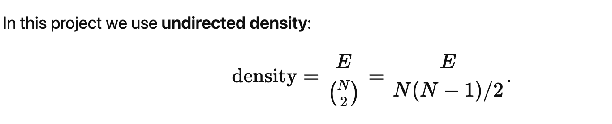
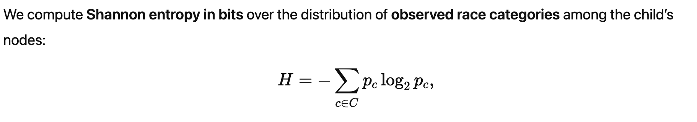
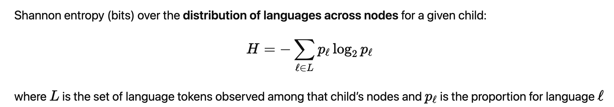

CSNQ Data Dictionary
This guide covers the three CSVs:
- node_level_long — one row per node listed for a child.
- ego_level_network_summary — one row per child (ego).
- activity_level_long — one row per activity for a child.
ChildID links all three data
1) ego_level_network_summary
ChildID
survey_respondent
child_name
survey_enddate
survey_completion
child_birthdate
child_age_in_months
child_gender
child_race
child_race_detail
child_zipcode
child_lang
child_lang_categorized
childcare_yn
childcare_type
childcare_start_age
childcare_size
childcare_child_age
childcare_gender
childcare_race
childcare_lang
1.5) ego_level_network_summary: Network summary
network_size
network_edges_number
network_density
network_component_count
network_component_ratio
network_75cutoff_age/kin/race/language
network_prop_adult_relationship
network_prop_kin_relationship
network_racial_entropy
network_racial_p_labels
network_racial_p_vector
network_racial_ingroup
network_racial_outgroup
network_racial_ei_index
network_language_entropy
network_language_p_labels
network_language_p_vector
network_size_valid_lang
network_lang_ingroup
network_lang_outgroup
network_linguistic_ei_index
2) node_level_long
ChildID
ego_age_in_months
ego_gender
ego_race
ego_language
node_type
node_index
node_name
node_relationship
node_liveathome_or_not
node_daily_hour_weekday
node_daily_hour_weekend
node_weekly_hour
node_weekly_hour_summarized
node_weekly_hour_percent
node_age_in_months
node_age_categorized
node_gender
node_race
node_language
node_mode_of_contact
node_context
node_context_count
node_kin
Relationship Closeness Questions:
node_closeness_comfort
node_closeness_name
node_closeness_play
node_closeness_pickup
node_closeness_score
node_clarify
node_mapping
node_mapping_code
node_activity_specific
node_component_group (helper)
3) activity_level_long
ChildID
activity_id
activity_label
activity_name
activity_otherkids_yn
activity_otherkids_n
activity_child_age
activity_gender
activity_race
activity_contact
activity_lang
activity_adults
activity_kids
1) ego_level_network_summary
ChildID
- Type: text (ID), Required
- Possible values: any study ID (e.g., A1234).
survey_respondent
- Type: text
- Possible values: name of the person who completed the survey in the same format as node_mapping_code .
child_name
- Type: text (PII)
- Possible values: the child’s first name
survey_enddate
- Type: text (formatted MM/DD/YYYY)
- Possible values: the date when the survey was completed recorded by Qualtrics
survey_completion
- Type: boolean (TRUE/FALSE)
- Possible values: TRUE (finished) or FALSE (not finished).
- This record whether the participant finished the full survey or stopped half way through
child_birthdate
- Type: date
- Possible values: child’s birthdate in MM/DD/YYYY
child_age_in_months
- Type: number (months)
- Calculated: months between birthdate and survey date.
- Manual example: DOB is 2023-02-10, survey date is 2025-09-17 → ~ 31 months.
child_gender
- Type: text
- Possible values: Female, Male, Prefer not to answer (Stored as NA), or “Other” text if “Other” is selected.
child_race
- Type: text
- Possible values: multiselect + free text, comma separated (e.g., White; Asian).
- NA means: “Prefer not to answer” is selected
child_race_detail
- Type: text
- Possible values: detail for racial information if Asian and Hispanic/Latino was selected in child_race (e.g., Chinese, Mexican).
child_zipcode
- Type: text
- Possible values: validated U.S. ZIP (5 digits).
child_lang
- Type: text
- Possible values: list of language
child_lang_categorized
- Type: categorical (derived from original child_lang prefix)
- Possible values: multilingual, bilingual, exposure, monolingual.
- Deriving rule: prefix on child_lang; if the only meaningful token is “English” → monolingual; English, Spanish → bilingual.
childcare_yn
- Type: yes/no
- Possible values: whether the child receives nonparental care or not
childcare_type
- Type: text
- Possible values: multiple choice multiple answer: Daycare center, Licensed family daycare, Daycare provider out of child’s home (unlicensed), Relative (other than parent) cares for child, Child care provider in child’s own home, or free-text from “Other”.
- NA means: childcare_yn = no
childcare_start_age
- Type: number
- Possible values: the age in months that the child first started receiving nonparental care; ≤ child_age_in_months
- NA means: childcare_yn = no
childcare_size
- Type: number
- Possible values: the number of child in the daycare group
- NA means:
- childcare_yn = no;
- none of Day care center / Licensed family day care / Unlicensed out-of-home provider selected under childcare_type
childcare_child_age
- Type: categorical
- Possible values: multiple choice multiple answer; what age of children are in the childcare group
- NA means:
- ‘I’m not sure’ is coded as ‘NA’;
- childcare_yn = no;
- none of Day care center / Licensed family day care / Unlicensed out-of-home provider selected under childcare_type;
- childcare_size≤1
childcare_gender
- Type: text
- Possible values: multiple choice multiple answer; Female (only female in childcare), Male (only male in childcare), Both (female and male in childcare), NA
- NA means:
- ‘I’m not sure’ is coded as ‘NA’;
- childcare_yn = no;
- none of Day care center / Licensed family day care / Unlicensed out-of-home provider selected under childcare_type;
- childcare_size≤1
childcare_race
- Type: text
- Possible values: multiple choice multiple answer; “Other” free text is merged in.
- NA means:
- ‘I’m not sure’ is coded as ‘NA’;
- childcare_yn = no;
- none of Day care center / Licensed family day care / Unlicensed out-of-home provider selected under childcare_type;
- childcare_size≤1
childcare_lang
- Type: text
- Possible values: list of language separated by ‘,’
- NA means:
- ‘I’m not sure’ is coded as ‘NA’;
- childcare_yn = no;
- none of Day care center / Licensed family day care / Unlicensed out-of-home provider selected under childcare_type;
Network summary:
network_size
- Type: number
- NA means: Watch out here if you see NA! either error because not computed or the response was empty
- Calculated: count of unique (node_type, node_index) combos in node_level_long.
- Manual example: 7 unique nodes in this child’s network → 7.
network_edges_number
- Type: integer
- NA means: no one in the network know anyone else; only 1 person in the network
- Calculated: number of unique ties from node mapping (node_level_long) which tells us who knows whom
- Manual example: edges {mom–dad, dad–brother, brother-teacher amy} → 3.
network_density
- Type: number in [0, 1] (derived)
- NA means: fewer than 2 nodes (N < 2) or edge was absent (E=0)
- Calculated: 
- Manual example: Network size=5, edges=4 → 4/10 = 0.40.
network_component_count
- Type: integer (derived)
- Possible values: 0+.
- NA means: no recognizable component groups present. Hardly possible because at least Homecare group is present if mom or dad, or any other caregiver was listed
- Calculated: number of distinct groups present among:
- HomeCare (Sibling, Liveathome, Extended family, Caregiver)
- Daycare (Teacher, Schoolkid)
- AnyoneElse
- Act1 … Act7
- Manual example: nodes across HomeCare, Daycare, Act2 → 3.
network_component_ratio
- Type: number (derived)
- Possible values: real number; commonly 0–1.
- NA means: network_size ≤ 1.
- Calculated: (network_component_count − 1) / (network_size − 1).
- Manual example: component_count=3, network_size=7 → (3−1)/(7−1)=2/6≈0.333.
network_75cutoff_age/kin/race/language
- Type: text (derived); these are four separate columns
- Possible values: "yes" or "rejected". You can use this to filter invalid responses if needed
- NA means: not evaluated (should not happen).
- Calculated: "yes" if ≥ 75% of nodes have of: age category, kin flag, race, ≥1 language token, and both mapping fields present; otherwise "rejected".
- Manual example: 12 nodes; 10 meet criteria → 10/12=83% → "yes".
network_prop_adult_relationship
- Type: number in 0–1 (derived)
- Possible values: percent of nodes with node_age_categorized = "18 years old or older".
- NA means: no nodes with an age category.
- Calculated: adults / network_size
- Manual example: 8 valid age nodes, 3 adults → 3/8 = 0.375.
network_prop_kin_relationship
- Type: number in 0–1 (derived)
- Possible values: share of nodes with node_kin = 1 (exclude NA).
- NA means: all node_kin values are NA.
- Calculated: kin / network_size
- Manual example: 10 answered, 6 kin → 6/10 = 0.6.
network_racial_entropy
- Type: number
- Possible values: ≥ 0; higher = more diverse.
- NA means: no valid race tokens across nodes.
- Calculated: Shannon entropy over node race categories.

- Manual example: counts {White:6, Asian:3, Black:1} → p={0.6,0.3,0.1} →
H = −Σ p log2 p ≈ 1.295.
network_racial_p_labels
- Type: text (derived)
- Possible values: readable label list of whole race categories, we define different mixed races as different categories, e.g., “Asian, Black or African American” is considered a distinct racial category compared to “Asian” or “Black or African American”.
- NA means: no valid race tokens.
- Calculated: ordered category labels used in the entropy computation.
network_racial_p_vector
- Type: text (derived)
- Possible values: probability vector string, e.g., "X=(0.6000; 0.3000; 0.1000)".
- NA means: no valid race tokens.
- Calculated: ordered probabilities aligned to network_racial_p_labels. e.g., "X=(0.6000; 0.3000; 0.1000)" is aligned to “Asian; Asian, Black or African American; White”.
network_racial_ingroup
- Type: integer (derived)
- NA means: no comparable race info (child or nodes).
- Calculated: number of nodes whose race set overlaps the child’s race set.
- e.g., child’s race: White, Asian and node’s race: White, Black or African American → ingroup
- Manual example: 8 comparable nodes; 5 overlap → 5.
network_racial_outgroup
- Type: integer (derived)
- Possible values: 0+.
- NA means: no valid race tokens.
- Calculated: number of nodes whose race set does not overlap the child’s race set.
- e.g., child’s race: White, Asian and node’s race: Black or African American→ outgroup
- Manual example: 8 comparable nodes; 3 no-overlap → 3.
network_racial_ei_index
- Type: number (derived)
- Possible values: −1 to +1.
- NA means: no valid race tokens.
- Calculated: (outgroup − ingroup) / valid, where valid = ingroup + outgroup.
- Manual example: ingroup 5, outgroup 3, valid 8 → (3−5)/8 = −0.25.
network_language_entropy
- Type: number (bits; derived)
- Possible values: ≥ 0.
- NA means: no nodes with valid language tokens.
- Calculated: Shannon entropy over language proportions where each node splits weight equally across its languages.
 - Manual example:
- Node A: English, Spanish → contributes 0.5 each.
- Node B: English → contributes 1.0 English.
- Valid nodes with language = 2.
- Props: English = (0.5+1.0)/2 = 0.75; Spanish = 0.5/2 = 0.25.
- Entropy ≈ 0.811.
network_language_p_labels
- Type: text (derived)
- Possible values: language labels string (e.g., "(English; Spanish)").
- NA means: no valid language tokens.
- Calculated: labels corresponding to the probability vector.
network_language_p_vector
- Type: text (derived)
- Possible values: probability vector string (e.g., "X=(0.7500; 0.2500)").
- NA means: no valid language tokens.
- Calculated: proportions aligned to network_language_p_labels.
network_size_valid_lang
- Type: integer (derived)
- Possible values: 0+; number of nodes with ≥1 real language token. For some nodes, if they chose “I’m not sure’ or ‘Preverbal/Nonverbal’, they are considered invalid information, therefore we need to know how many are valid that contains language information
- NA means: not computed (should be integer).
- Calculated: count of distinct nodes contributing to language proportions.
- Manual example: 10 nodes with languages → 10.
network_lang_ingroup
- Type: integer (derived)
- Possible values: 0+.
- NA means: child has no language tokens, or nodes have none.
- Calculated: nodes whose language set overlaps with the child’s language set.
- Manual example: child {English, Spanish}; node {English} → ingroup.
network_lang_outgroup
- Type: integer (derived)
- Possible values: 0+.
- NA means: child has no language tokens, or nodes have none.
- Calculated: nodes whose language set is not a subset of the child’s set.
- Manual example: child {English, Spanish}; node {English, Mandarin} → outgroup.
network_linguistic_ei_index
- Type: number (derived)
- Possible values: −1 to +1.
- NA means: network_size_valid_lang = 0.
- Calculated: (network_lang_outgroup − network_lang_ingroup) / network_size_valid_lang.
- Manual example: ingroup 7, outgroup 3, valid 10 → (3−7)/10 = −0.4.
Awesome — here’s the copy-and-paste, per-variable guide for the other two outputs. It uses the same format (Heading 2 + short bullets) and the language you asked for (use node, not alter).
2) node_level_long
- one row = one node for a given child
- Node: each individual in the network
- Ego information are same as what was in ego_level_network_summary, they are included here as references
ChildID
- Type: text (ID)
- Possible values: any study ID (e.g., A1234).
- NA means: missing key; indicates a data problem and should not occur.
ego_age_in_months
- Type: number (months); Same as child_age_in_months in ego_level_network_summary
- Calculated: months between birthdate and survey date.
- Manual example: DOB is 2023-02-10, survey date is 2025-09-17 → ~ 31 months.
ego_gender
- Type: text; Same as child_gender in ego_level_network_summary
- Possible values: Female, Male, Prefer not to answer (Stored as NA), or “Other” text if “Other” is selected.
ego_race
- Type: text; Same as child_race in ego_level_network_summary
- Possible values: multiselect + free text, comma separated (e.g., White; Asian).
- NA means: “Prefer not to answer” is selected
ego_language
- Type: text
- Possible values: list of language
node_type
- Type: categorical
- Possible values:
- Sibling, Liveathome, Teacher, Schoolkid, Caregiver, Extended family, Anyoneelse
- Activity roles: Act1Adult … Act7Adult, Act1Kid … Act7Kid
- NA means: not classified (should not occur)
node_index
- Type: integer
- Possible values: 1+ within each node_type (e.g., first sibling is 1).
- NA means: not assigned (should not occur).
node_name
- Type: text
- Possible values: first name of this node provided by respondent.
- NA means: respondent left it blank (should not occur)
node_relationship
- Type: text
- Possible values: relationship string (e.g., Mom, Grandpa, Teacher).
- NA means: not asked for some roles (e.g., Schoolkid, Act#Kid).
node_liveathome_or_not
- Type: categorical (yes/no)
- Possible values:
- yes for Liveathome nodes (and some Siblings who live at home),
- no otherwise.
node_daily_hour_weekday
- Type: number (hours/day)
- Possible values: 0–24
- NA means: not applicable (this is only available for nodes that have yes under node_liveathome_or_not ) or not answered.
node_daily_hour_weekend
- Type: number (hours/day)
- Possible values: 0–24 (typically 0–16).
- NA means: not applicable (this is only available for nodes that have yes under node_liveathome_or_not ) or not answered.
node_weekly_hour
- Type: number (hours/week)
- Possible values: 0–168.
- NA means: not applicable (this is only available for node that have no under node_liveathome_or_not ) or not answered.
node_weekly_hour_summarized
- Type: number (hours/week; derived)
- Possible values: 0–168.
- NA means: insufficient inputs.
- Calculated:
- If node_liveathome_or_not == "yes" → weekday*5 + weekend*2.
- Else → equals node_weekly_hour.
- Manual example: weekday 5, weekend 8 → 5*5 + 8*2 = 41 hrs/week.
node_weekly_hour_percent
- Type: number (0–100; derived)
- Possible values: 0–100 (% of the 168-hr week).
- NA means: summarized hours missing.
- Calculated: 100 * node_weekly_hour_summarized / 168.
- Manual example: 41 hrs → 100*41/168 ≈ 24.4.
node_age_in_months
- Type: number (months)
- Possible values: ≥ 0 (siblings only; computed from sibling DOB MM/YYYY).
- NA means: not applicable (none sibling nodes does not have this information) or DOB missing.
- Manual example: DOB 2018-08, end 2025-09 → ~ 85 months.
node_age_categorized
- Type: categorical
- Possible values: Younger than 2 years old, 2–5 years old, 6–12 years old, 13–17 years old, 18 years old or older.
- NA means: not answered, or ‘I’m not sure’ was selected that was stored as NA
node_gender
- Type: text
- Possible values: female, male, or optional “Other” text.
- NA means: not answered, or ‘I’m not sure’ was selected that was stored as NA
node_race
- Type: text
- Possible values: comma-separated race labels; “Other” text is merged.
- NA means: not answered, or ‘I’m not sure’ was selected that was stored as NA
node_language
- Type: text
- Possible values: comma-separated languages; may include preverbal/nonverbal (counts as NA when calculating).
- NA means: not answered, or ‘I’m not sure’ was selected that was stored as NA
node_mode_of_contact
- Type: categorical
- Possible values: In-person only, Virtually only (e.g., over Zoom or video chats), Both virtually and in-person.
- NA means: not answered.
node_context
- Type: text (cleaned list)
- Possible values: any combination of: At home, Extended Family, Daycare/School, Activity 1 … Activity 7.
- NA means: context not provided. This individual does not interact with the child under any of the mentioned contexts
- Note: activity labels are canonicalized (e.g., “activity 3” → Activity 3).
node_context_count
- Type: integer (derived)
- Possible values: 0+ distinct contexts on this node (0 if node_context is NA).
- NA means: not computed (should not occur).
- Calculated: counts comma/semicolon-separated tokens.
- Manual example: At home, Activity 2, Daycare/School → 3.
node_kin
- Type: integer/binary
- Possible values: 1 = kin, 0 = not kin.
- NA means: respondent skipped / not applicable.
- Note: Siblings are always 1.
Relationship Closeness Questions:
node_closeness_comfort
- Type: binary/NA
- Possible values: 1 = yes, 0 = no, NA = does not apply / never tried.
- NA means: “does not apply” or skipped.
node_closeness_name
- Type: binary/NA
- Possible values: 1 = yes, 0 = no, NA = does not apply.
- NA means: “does not apply” or skipped.
node_closeness_play
- Type: binary/NA
- Possible values: 1 = yes, 0 = no, NA = does not apply.
- NA means: “does not apply” or skipped.
node_closeness_pickup
- Type: binary/NA
- Possible values: 1 = yes, 0 = no, NA = does not apply (e.g., infant/never tried).
- NA means: “does not apply” or skipped.
node_closeness_score
- Type: integer (0–4; derived)
- Possible values: sum of the four closeness items with NA→0.
- NA means: not computed (should not occur; default is 0 if all NA).
- Calculated: comfort + name + play + pickup with NA treated as 0.
- Manual example: comfort=1, name=NA, play=1, pickup=0 → 1+0+1+0 = 2.
node_clarify
- Type: text (free notes)
- Possible values: any comment the respondent adds about the relationship.
- NA means: no notes.
node_mapping
- Type: text (comma-separated codes)
- Possible values: list of node_mapping_code values that this node knows (bidirectional assumed).
- NA means: no mapping provided for this node, very possible because node_mapping from previous node already indicated this connection
- Note: if A lists B, we treat A–B as an undirected tie and avoid asking it again for B.
node_mapping_code
- Type: text (stable key)
- Possible values: identifying code for nodes like Sibling1_Amy
- NA means: not generated (should not occur; required for pairing mapping).
- Calculated: from type + index + cleaned name
- Manual example: type=Teacher, index=2, name=Ms Lee → Teacher2_MsLee.
node_activity_specific
- Type: text
- Possible values: the activity label from which this node originated (e.g., Soccer).
- NA means: node did not come from an activity block.
node_component_group (helper)
- Type: categorical (derived)
- Possible values: HomeCare, Daycare, AnyoneElse, Act1 … Act7.
- NA means: unrecognized node_type (should not occur).
- Note: used for network component summary.
3) activity_level_long
- one row = one activity for a child
ChildID
- Type: text (ID)
- Possible values: any study ID (e.g., A1234).
- NA means: missing key; indicates a data problem and should not occur.
activity_id
- Type: integer
- Possible values: 1–7 (matches the 7 activity slots in the survey).
- NA means: not parsed.
activity_label
- Type: text (canonical)
- Possible values: Activity 1 … Activity 7.
- NA means: not generated.
activity_name
- Type: text
- Possible values: respondent’s label for the activity (e.g., Soccer, Church).
- NA means: the slot existed but was left unnamed.
activity_otherkids_yn
- Type: yes/no
- Possible values: Yes, No. Is this an activity with any other kids?
- NA means: not answered.
activity_otherkids_n
- Type: integer
- Possible values: 0+ (parsed from free text when present).
- NA means: if ‘no’ was selected in activity_otherkids_yn
activity_child_age
- Type: categorical
- Possible values: <2, 2–5, 6–12, 13–17, what age of children are in this activity?
- NA means: selected ‘I’m not sure’ or if ‘no’ was selected in activity_otherkids_yn
activity_gender
- Type: text
- Possible values: gender composition for kids at this activity,
- NA means: selected ‘I’m not sure’ or if ‘no’ was selected in activity_otherkids_yn
activity_race
- Type: text
- Possible values: race/ethnicity composition for kids at this activity; “Other” text merged.
- NA means: selected ‘I’m not sure’ or if ‘no’ was selected in activity_otherkids_yn
activity_contact
- Type: categorical
- Possible values: in-person, virtual, both.
activity_lang
- Type: text
- Possible values: languages heard/used in this activity context.
- NA means: not answered or selected ‘I’m not sure’ or if ‘no’ was selected in activity_otherkids_yn
activity_adults
- Type: integer (derived from node_level_long)
- Possible values: 0+
- NA means: could not compute (should default to 0).
- Calculated: count of adult nodes (Act?Adult) listed under this activity for the same child.
- Manual example: Activity 3 has two Act3Adult nodes → 2.
activity_kids
- Type: integer (derived)
- Possible values: 0+
- NA means: could not compute (should default to 0).
- Calculated: count of kid nodes (Act?Kid) listed under this activity for the same child.
- Manual example: Activity 3 has three Act3Kid nodes → 3.